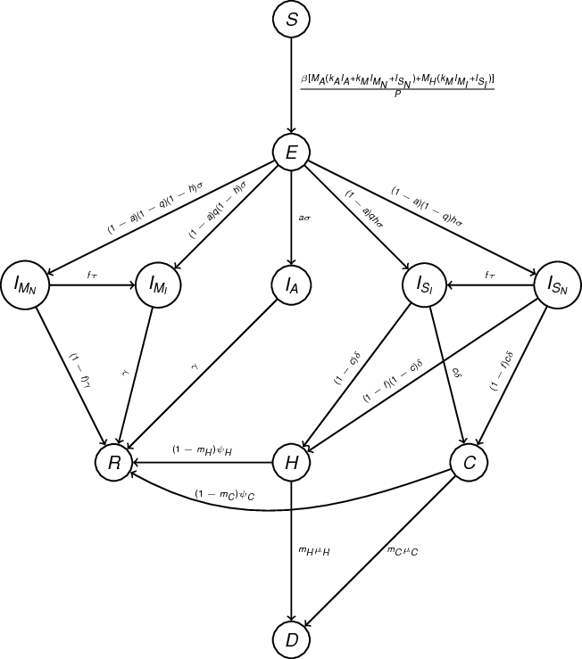

Covid-19 in India
2 Model
We developed an age-structured SEIR-type model for COVID-19 transmission in India to estimate spread of CoVID-19 infections in each state of India. We stratify the population into four age-groups: 0-19, 20-49, 50-64 and 65+ years of age using current population estimates (ref) and age-distribution from last census (ref). Contact patterns between different age-groups is informed by estimates for contact patterns in India (ref). The model is also stratified into compartments based on natural history of disease as well as interventions. After a susceptible individual (\(S\)) acquires infection, it remains in incubation period (\(E\)) for an average of 5.2 days. We assume that a person is not infectious during their incubation period. Following incubation period, an individual either remains asymptomatic (\(I_A\)) or develops symptoms. A proportion of symptomatic individuals (\((1-q)\)) only develop mild symptoms. Symptomatic individuals with mild symptoms (\(I_N\),\(Q_N\)) do not need hospitalization and recover on an average of \(1/\gamma\) days. Individuals with mild or severe symptoms both can either be isolated immediately after developing symptoms (\(E\)->\(Q_N\),\(E\)->\(Q_H\)) or can be isolated later (\(I_N\)->\(Q_N\),\(I_H\)->\(Q_H\)) based on the contact tracing rate (τ) Symptomatic individuals with severe symptoms (\(I_H\),\(Q_H\)) either need just hospitalization(\(H\)) or also need to be in ICU (\(C\)). Those hospitalized (\(H\),\(C\)) either recover or die.

2.1 Data
2.2 Model Compartments
| Compartment | Definition |
| \(S\) | Susceptible |
| \(E\) | Incubation |
| \(I_A\) | Asymptomatic infections |
| \(I_H\) | Symptomatic severe infections (not isolated) |
| \(I_N\) | Symptomatic mild infections (not isolated) |
| \(Q_H\) | Symptomatic severe infections (isolated) |
| \(Q_N\) | Symptomatic mild infections (not isolated) |
| \(H\) | Hospitalization |
| \(C\) | Need ICU |
| \(D\) | Deaths |
2.3 Model Parameters
| Parameter | Definition | Value | Reference |
|---|---|---|---|
| \(P\) | Population size | - | |
| \(R_0\) | Reproduction number | 1.7-2.2 | |
| \(\beta\) | Probability of infection | \(f(R_0,M)\) | |
| MA | Contact matrix for general population | - | |
| \(M_H\) | Contact matrix for household | - | |
| \(k_A\) | Relative infectivity of asymptomatic infections | 0.5 | |
| \(k_M\) | Relative infectivity of mild cases | 0.5 | |
| \(1/\sigma\) | Duration of incubation period | 1/5.2 | https://annals.org/aim/fullarticle/2762808/incubation-period-coronavirus-disease-2019-covid-19-from-publicly-reported |
| \(a\) | Proportion of asymptomatic cases | 0.28 | |
| \(h\) | Proportion of severe symptomatic cases | [0.025, 0.32, 0.32, 0.64] | |
| \(q\) | Proportion of symptomatic cases being isolated immediately | 0.05 | Maybe different for mild & severe cases |
| \(\tau\) | Contact tracing rate | 1/2 | 1 for severe cases/2 for mild (right now its 2 for everything) |
| \(f\) | Proportion of symptomatic cases being isolated later | 0.05 | Maybe different for mild & severe cases |
| \(\gamma\) | Recovery rate of mild and asymptomatic cases | 1/(2*(7.5-4)) | |
| \(\delta\) | Hospitalization rate | 1/3.5 | |
| \(c\) | Proportion of symptomatic cases needing ventilators in hospitals | [0.014, 0.042, 0.075, 0.15] | |
| \(m_h\) | Proportion of hospitalized cases that are fatal | 0.2296 | |
| \(m_c\) | Proportion of hospitalized cases needing ventilators that are fatal | 0.1396 | |
| \(\psi_H\) | Recovery rate of hospitalized cases | 1/10 | |
| \(\psi_C\) | Recovery rate of hospitalized cases needing ventilators | 1/13.25 | |
| \(\mu_H\) | Mortality rate of hospitalized cases | 1/9.7 | |
| \(\mu_C\) | Mortality rate of hospitalized cases needing ventilators | 1/7 |
4 Notes
4.1 Things to consider
[ ]Consider gravity model/connectivity between states
4.2 Things to do
[X]Incorporate Asymptomatic infections[X]Incorporate relative infectivity of mild and asym. cases[X]Download old code,run again to verify it works[X]Restart with old working code[X]Add kM first- When kM is small, it reduces the size of epidemic a lot.
- Could be that R0 calculation needs to be adjusted
- Could be that kM makes transmission quite low.
- In that case, when they move to isolation, shouldn't they be even less infectious?
- When kM is small, it reduces the size of epidemic a lot.
[X]Then add death compartment[X]Then add kA and asymptomatic compartment
[X]Update R0 calculation[ ]Figures and data[ ]All cases together[ ]All hospitalization[ ]All death[ ]Cumulative numbers?[ ]Full solutions
[ ]Improve readability of code[ ]Appropriate initialization of each state[ ]Pooling together results for each state[ ]Incorporate interventions after lockdown[X]Make model diagram (Update)[X]Check/Update each parameter (Make parameters table)[ ]Write manuscript